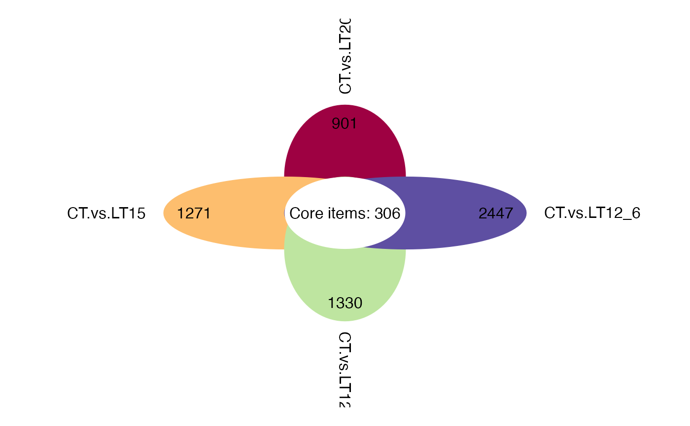
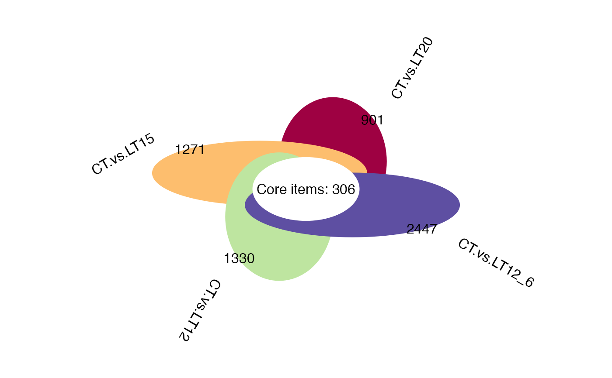
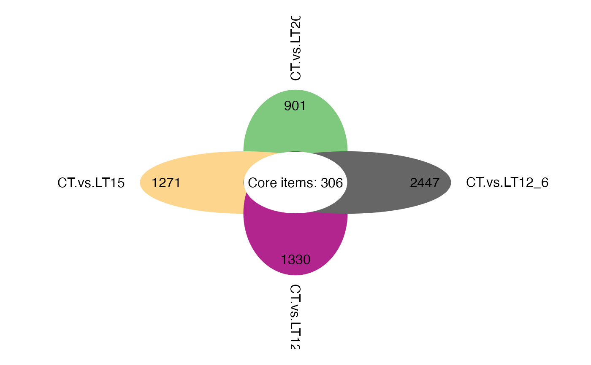
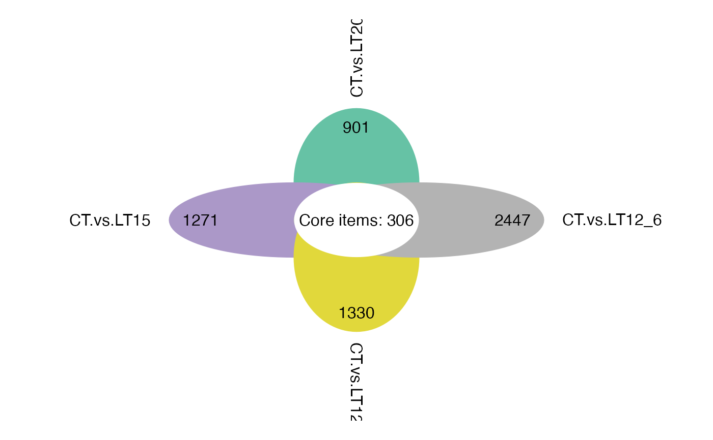

Flower plot for stat common and unique gene among multiple sets.
Source:R/flower_plot.R
flower_plot.RdFlower plot for stat common and unique gene among multiple sets.
Usage
flower_plot(
flower_dat,
angle = 90,
a = 1,
b = 2,
r = 1,
ellipse_col_pal = "Spectral",
circle_col = "white",
label_text_cex = 1
)Arguments
- flower_dat
Dataframe: Paired comparisons differentially expressed genes (degs) among groups (1st-col~: degs of paired comparisons).
- angle
Number: set the angle of rotation in degress. Default: 90.
- a
Number: set the radii of the ellipses along the x-axes. Default: 0.5.
- b
Number: set the radii of the ellipses along the y-axes. Default: 2.
- r
Number: set the radius of the circle. Default: 1.
- ellipse_col_pal
Character: set the color palette for filling the ellipse. Default: "Spectral", options: 'Spectral', 'Set1', 'Set2', 'Set3', 'Accent', 'Dark2', 'Paired', 'Pastel1', 'Pastel2'.
- circle_col
Character: set the color for filling the circle. Default: "white".
- label_text_cex
Number: set the label text cex. Default: 1.
Examples
# 1. Library TOmicsVis package
library(TOmicsVis)
# 2. Use example dataset
data(degs_lists)
head(degs_lists)
#> CT.vs.LT20 CT.vs.LT15 CT.vs.LT12 CT.vs.LT12_6
#> 1 transcript_9024 transcript_4738 transcript_9956 transcript_10354
#> 2 transcript_604 transcript_6050 transcript_7601 transcript_2959
#> 3 transcript_3912 transcript_1039 transcript_5960 transcript_5919
#> 4 transcript_8676 transcript_1344 transcript_3240 transcript_2395
#> 5 transcript_8832 transcript_3069 transcript_10224 transcript_9881
#> 6 transcript_74 transcript_9809 transcript_3151 transcript_8836
# 3. Default parameters
flower_plot(degs_lists)

# 4. Set angle = 60
flower_plot(degs_lists, angle = 60)

# 5. Set ellipse_col_pal = "Accent"
flower_plot(degs_lists, ellipse_col_pal = "Accent")

# 6. Set a = 1, b = 2, r = 1
flower_plot(degs_lists, a = 1, b = 2, r = 1, ellipse_col_pal = "Set2")
